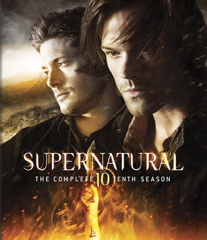
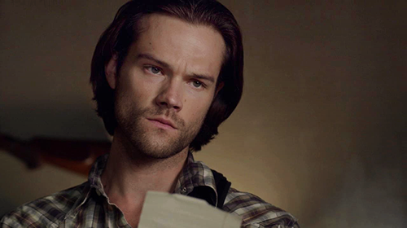
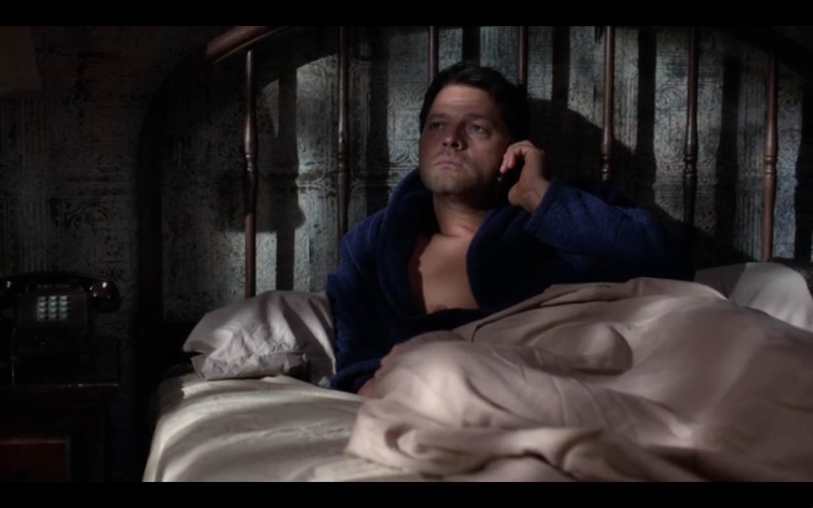
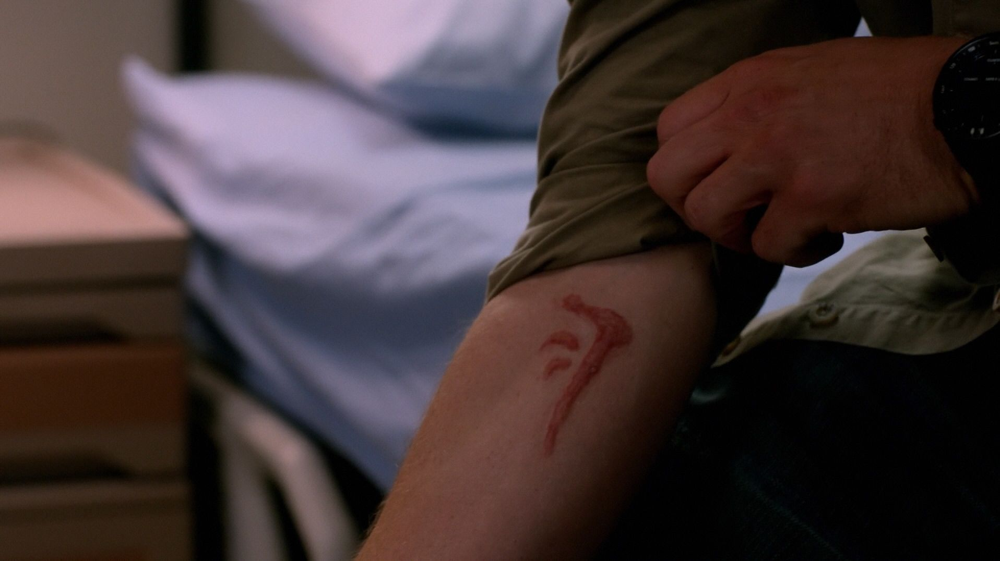
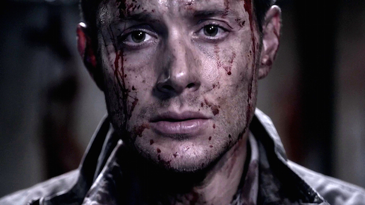
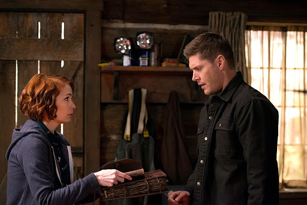
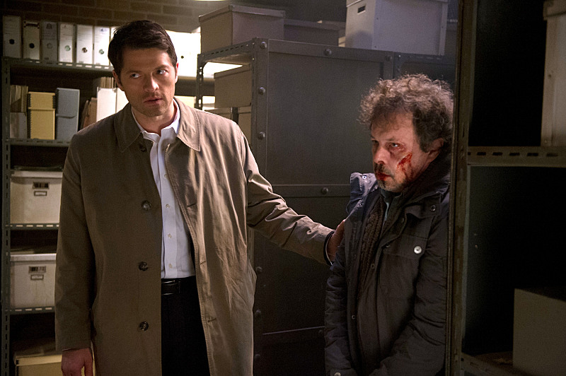
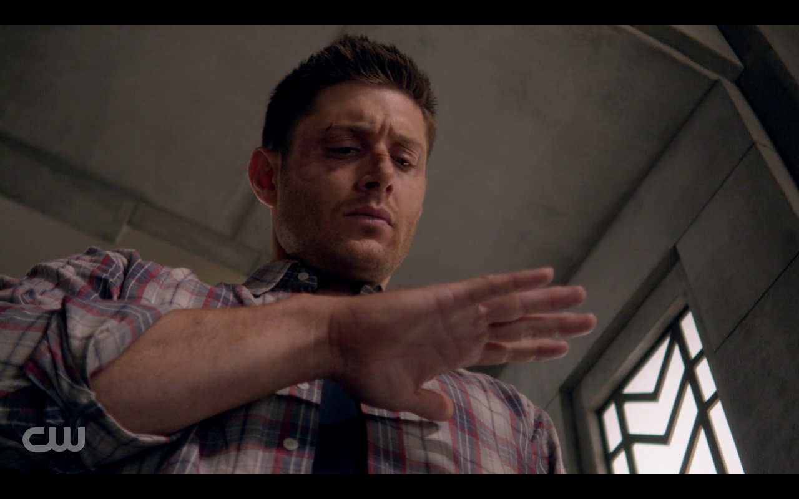
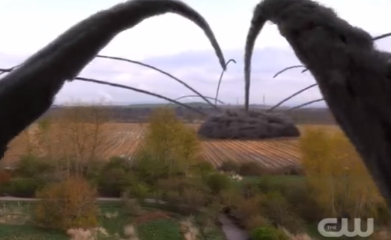

Temporada 10

A décima temporada começa com a busca frenética de Sam pelo seu irmão desaparecido, que se foi sem deixar rastros. A estrada para recuperar o instável Dean leva Sam a caminhos obscuros, com consequências que vão afetar profundamente os irmãos. Enquanto isso, Castiel precisa recolher os pedaços deixados como consequência da campanha de. Com sua graça falhando e anjos rebeldes ainda à solta, Castiel enfrentará o relógio da própria mortalidade enquanto novas ameaças que emergem mais uma vez, levando nossos heróis ao limite.


Após Dean aceitar a marca de Caim com Caim na 9 temporada , começa a mudar-lo, concedendo-lhe poderes sobrenaturais , elevando sua sede de sangue , e fazendo-o um escravo sanguinário da Primeira Espada. Quando ele é morto por Metatron em "Do You Believe in Miracles ?" -"Você Acredita em Milagres?"
A Marca ressuscita-o como um demônio , com a vantagem adicional de que ele é imune ao exorcismo, como ele tecnicamente não possui o seu corpo , mas sim o seu "proprietário" natural. Mais tarde ele é curado por Sam em "Alma Sobrevivente (BR) / Soul Survivor (US)" embora ele ainda possui o potencial para se tornar um demônio novamente por ainda ter a marca de Caim .


Charlie chama Sam e Dean para dizer a eles que ela achou o Livro dos Mortos que pode ajudar a remover a Marca de Caim. Os Winchesters correm até ela após ela contar para eles que foi baleada por um homem chamado Jacob Styne que diz que o livro pertence a sua família e ele não vai descansar até obter o livro de volta. Castiel e Metatron faz uma viajem para encontrar a graça de Castiel mas eles topam com alguns problemas pelo caminho. Sam encontra Rowena.


Dean toma uma decisão chocante relacionada à Marca de Caim, algo capaz de mudar não apenas sua vida, mas a de Sam. Enquanto isso, Crowley, Rowena e Castiel trabalham juntos na cura, porém mais uma vez um preço muito caro é pago e uma nova força é liberada.

